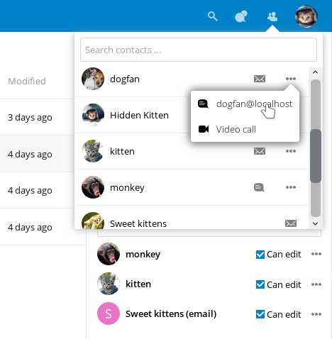

Cosa c’è di nuovo per gli utenti di Nextcloud latest
Modo più semplice per selezionare una nuova applicazione
Nuovo menu dei contatti per cercare i tuoi colleghi e amici più facilmente

Un menu a comparsa dei contatti su qualunque avatar
Capacità di inviare più collegamenti di condivisione univoci, ognuno con le proprie impostazioni, inserendo gli indirizzi di posta (il destinatario riceverà un’email).
Molti altri aggiornamenti e nuove applicazioni, come condivisione dello schermo nelle video chiamate, nuova applicazione Cerchie per gruppi definiti dall’utente, notifiche push, notifiche di modifiche dei file anche se condivisi con un altro server, annullare la rimozione di file da una cartella condivisa anche se la rimozione è stata eseguita da un destinatario, diretta condivisione sulle reti sociali e molto altro ancora.